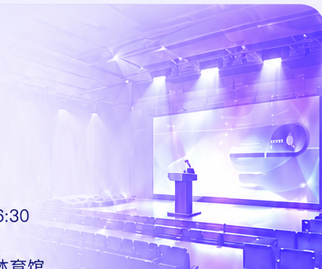

李泽湘大会嘉宾
李泽湘大会嘉宾
主论坛
大会开幕式
汇聚湾区人才力量，共启高质量发展新篇章
活动信息
◷10月25日 09:00—09:50
⌖松山湖国际会议中心·大礼堂
大会开幕式将正式拉开第四届粤港澳大湾区人才高质量发展大会帷幕，展示湾区人才创新发展的蓬勃活力。
出席嘉宾
李泽湘大会嘉宾 张宏图大会嘉宾
张宏图大会嘉宾 余东东大会嘉宾
余东东大会嘉宾
场地信息
东莞·松山湖国际会议中心 大礼堂
请提前 15 分钟入场就座

汇聚湾区人才力量，共启高质量发展新篇章
大会开幕式将正式拉开第四届粤港澳大湾区人才高质量发展大会帷幕，展示湾区人才创新发展的蓬勃活力。
李泽湘大会嘉宾张宏图大会嘉宾余东东大会嘉宾东莞·松山湖国际会议中心 大礼堂
请提前 15 分钟入场就座